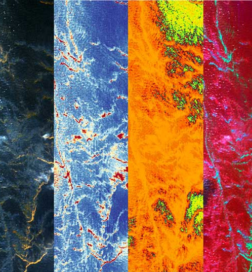
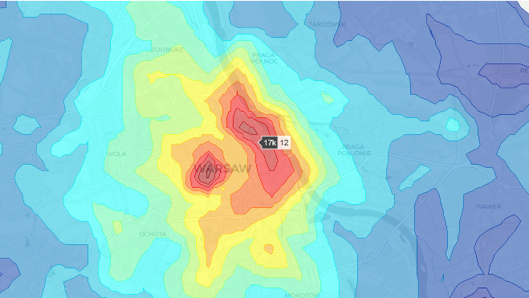
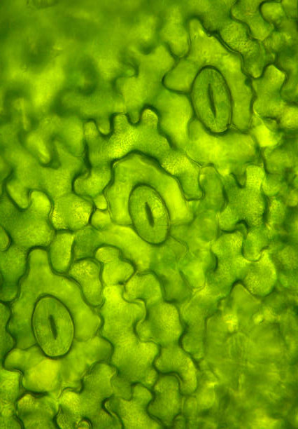
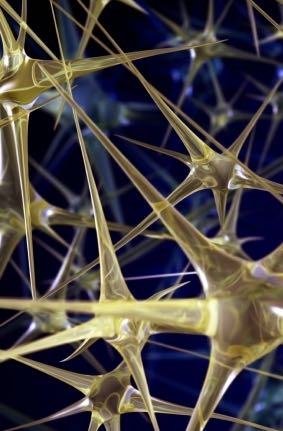
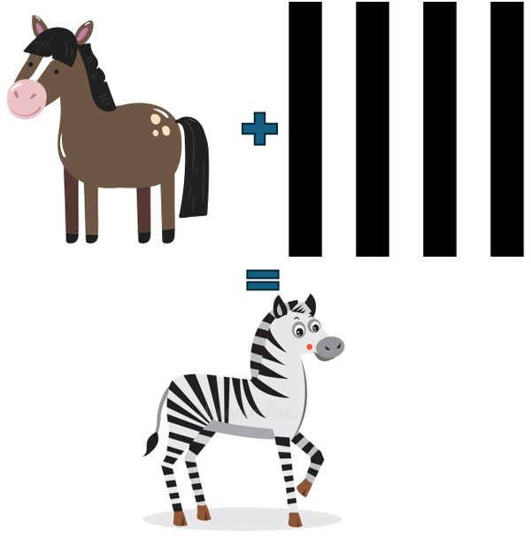
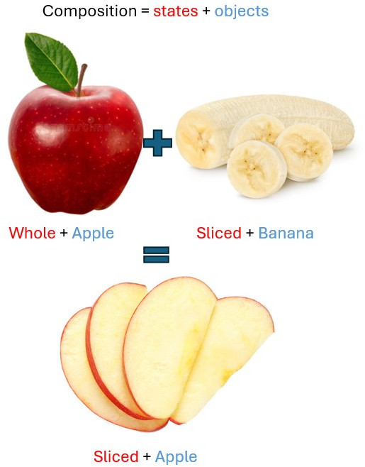

Synthetic Hyperspectral Image Generation to Aid RS Applications
Learning from hyperspectral images (HSI) requires large annotated training datasets, which is laborious. The low spatial resolution of the images exponentially increases the challenge further and requires skilled domain experts. Prior arts using generative techniques and self-supervised learning also rely on large datasets for learning pretext tasks. We propose a novel Hyper-SynGen framework to synthetically generate HSI data without manual labeling. We extract the spatial geometry of the semantic classes using the image-to-image translation method from Google Maps and add the spectral information from the Tarang spectral library. To replicate the complexity of the real-world landscapes, we incorporate stochasticity in the class distribution at i) pixel level, ii) region level, and iii) global level, depending on the class at hand. This process relies on crowd-sourced labeling provided by Google Maps and does not require further manual labeling.
Using this synthetic dataset to learn a pretext task on a self-supervised learning setup helps achieve better performance than the existing state-of-the-art. Hence, when replaced with real annotated data, the synthetically generated dataset is experimentally found to be as capable as real data, as it boosts the overall SOTA by a considerable margin.
Ushasi Chaudhuri, Shailesh Deshpande, Arpan Pal
IEEE IGARSS 2025 [
Paper] [BibTex]

Determining spatial distribution of disaster intensities from news article using LLMs
In recent years, the ability to automatically extract and analyze disaster-related information from unstructured news articles has become important for disaster response and management. In this research , the approach leverages language models, including a fine-tuned DistilBERT model for news article classification and the Google Gemini Flash 1.5 language model for disaster knowledge extraction, combined with gaussian distribution fitting for event projection as heatmap. The results demonstrate the model’s high accuracy in identifying disaster types, locations, and severity, and its ability to generate real-time disaster heatmap for effective decision-making support. This work is the first to integrate these methods in such a comprehensive way, providing a powerful tool for disaster response. By addressing the research question of how to automate disaster information extraction and visualization from news sources, this study offers a novel contribution to the field of disaster management.
Aniket Zope, Ushasi Chaudhuri, Shailesh Deshpande
IEEE IGARSS 2025 [Paper] [
arXiv] [BibTex]

Machine learning-enabled computer vision for plant phenotyping: a primer on AI/ML and a case study on stomatal patterning
Artificial intelligence and machine learning (AI/ML) can be used to automatically analyze large image datasets. One valuable application of this approach is estimation of plant trait data contained within images. Here we review 39 papers that describe the development and/or application of such models for estimation of stomatal traits from epidermal micrographs. In doing so, we hope to provide plant biologists with a foundational understanding of AI/ML and summarize the current capabilities and limitations of published tools. While most models show human-level performance for stomatal density (SD) quantification at superhuman speed, they are often likely to be limited in how broadly they can be applied across phenotypic diversity associated with genetic, environmental, or developmental variation. Other models can make predictions across greater phenotypic diversity and/or additional stomatal/epidermal traits, but require significantly greater time investment to generate ground-truth data. We discuss the challenges and opportunities presented by AI/ML-enabled computer vision analysis, and make recommendations for future work to advance accelerated stomatal phenotyping.
Grace D. Tan, Ushasi Chaudhuri, Sebastian Varela, Narendra Ahuja, Andrew D.B. Leakey
Journal of Experimental Botany, Vol. 75, No. 21 pp. 6683–6703, 2024 [
Paper] [
BibTex]

Zero-shot sketch based image retrieval using graph transformer
The performance of a zero-shot sketch-based image retrieval (ZS-SBIR) task is primarily affected by two challenges. The substantial domain gap between image and sketch features needs to be bridged, while at the same time the side information has to be chosen tactfully. Existing literature has shown that varying the semantic side information greatly affects the performance of ZS-SBIR. To this end, we propose a novel graph transformer based zero-shot sketch-based image retrieval (GTZSR) framework for solving ZS-SBIR tasks which uses a novel graph transformer to preserve the topology of the classes in the semantic space and propagates the context-graph of the classes within the embedding features of the visual space. To bridge the domain gap between the visual features, we propose minimizing the Wasserstein distance between images and sketches in a learned domain-shared space. We also propose a novel compatibility loss that further aligns the two visual domains by bridging the domain gap of one class with respect to the domain gap of all other classes in the training set. Experimental results obtained on the extended Sketchy, TU-Berlin, and QuickDraw datasets exhibit sharp improvements over the existing state-ofthe-art methods in both ZS-SBIR and generalized ZS-SBIR.
Sumrit Gupta, Ushasi Chaudhuri, Biplab Banerjee, Saurabh Kumar
IEEE ICPR, 2022 [
Paper] [
arXiv] [
BibTex]

Zero-Shot Cross-Modal Retrieval for Remote Sensing Images with Minimal Supervision
The performance of a deep-learning-based model primarily relies on the diversity and size of the training dataset. However, obtaining such a large amount of labeled data for practical remote sensing (RS) applications is expensive and labor-intensive. Training protocols have been previously proposed for few-shot learning (FSL) and zero-shot learning (ZSL). However, FSL is not compatible with handling unobserved class data at the inference phase, while ZSL requires many training samples of the seen classes. In this work, we propose a novel training protocol for image retrieval and name it as label-deficit zero-shot learning (LDZSL). We use this novel LDZSL training protocol for the challenging task of cross-sensor data retrieval in RS. This protocol uses very few labeled data samples of the seen classes during training and interprets unobserved class data samples at the inference phase. This strategy is critical as some data modalities are hard to annotate without domain experts. This work proposes a novel bilevel Siamese network to perform the LDZSL cross-sensor retrieval of multispectral and synthetic aperture radar (SAR) images. We use the available georeferenced SAR and multispectral data to domain align the embedding features of the two modalities. We experimentally demonstrate the proposed model’s efficacy using the So2Sat dataset compared with the existing state-of-the-art models of the ZSL framework trained under a reduced training set. We also show the generalizability of the proposed model using a sketch-based image retrieval task. Experimental results on the Earth on the Canvas dataset exhibit comparative performance over the literature.
Ushasi Chaudhuri, Rupak Bose, Biplab Banerjee, Avik Bhattacharya, Mihai Datcu
IEEE Transactions on Geoscience and Remote Sensing, volume 60 [
Paper] [
BibTex]

Multi-Stage Semantic Graph Embeddings for Compositional Zero-Shot Learning
We tackle the problem of compositional zero-shot learning (CZSL) where the task is to recognize novel composite semantic concepts (like red-tomato, wet-dog) consisting of states (red, wet) and objects (tomato, dog) characterizing the visual primitives. CZSL is a complex task given the fact that similar states may appear to be visually distinct, thus hampering the recognition performance. Recently, graph convolution networks (GCN) have been used to learn a compatibility function among the visual, state, and object embeddings. However, we postulate that these techniques do not fully explore the compositional nature of the semantic space where states, objects, and pairs follow different neighborhood topologies. To this end, we introduce the concept of multi-stage graph embeddings where separate GCNs are used to initially model the pairwise interactions for the states, objects, and the composition label embeddings, respectively. A composite GCN subsequently combines this information to learn a discriminative and neighborhood preserving latent semantic space ensuring the strong coupling of a composition label with its respective state and object. Further, we use a vision transformer for projecting the images onto the same latent space where the cross-modal information can be compared. An adaptive margin based cross-entropy loss is introduced to train the model end-to-end while ensuring enriched discrimination among the categories. Results on the MIT-States, UT-Zappos and C-GQA datasets confirm the superiority of the proposed approach.
Hitesh Kandala, Ruchika Chavhan, Ushasi Chaudhuri, Biplab Banerjee
Pattern Recognition Letters, 2022 [Paper]
BDA-SketRet: Bi-Level Domain Adaptation for Zero-Shot SBIR
The efficacy of zero-shot sketch-based image retrieval (ZS-SBIR) models is governed by two challenges. The immense distributions-gap between the sketches and the images requires a proper domain alignment. Moreover, the fine-grained nature of the task and the high intra-class variance of many categories necessitates a class-wise discriminative mapping among the sketch, image, and the semantic spaces. Under this premise, we propose BDA-SketRet, a novel ZS-SBIR framework performing a bi-level domain adaptation for aligning the spatial and semantic features of the visual data pairs progressively. In order to highlight the shared features and reduce the effects of any sketch or image-specific artifacts, we propose a novel symmetric loss function based on the notion of information bottleneck for aligning the semantic features while a cross-entropy-based adversarial loss is introduced to align the spatial feature maps. Finally, our CNN-based model confirms the discriminativeness of the shared latent space through a novel topology-preserving semantic projection network. Experimental results on the extended Sketchy, TU-Berlin, and QuickDraw datasets exhibit sharp improvements over the literature.
Ushasi Chaudhuri, Ruchika Chavan, Biplab Banerjee, Anjan Dutta, Zeynep Akata
Neurocomputing, Volume 514, pp 245-255, 2022 [
arXiv] [
Paper] [
BibTex]